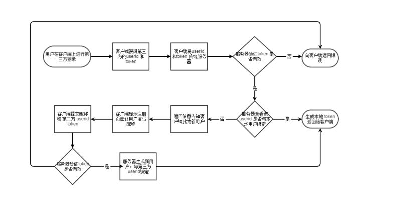

LoginManager.init(this);
LoginServiceProvider.setDevEnv(BuildConfig.DEBUG);
RequestManager.init(this);
//图片加载器
ImageLoaderUtils.getInstance().init(this);
//初始化个人信息(定位信息)
UserInfoCenter.getInstance();
1.第三方应用会保存用户的账户和密码，这样很不安全。
2.用户没法限制第三方应用的授权范围和有效期。
3.用户只有修改密码才会取消授权，但这样的话会使其他的第三方授权也失效。
4.如果第三方应用被破解，那么就会导致用户密码泄露，和数据泄露。
OAuth在"客户端"与"服务提供商"之间，设置了一个授权层（authorization layer）。
"客户端"不能直接登录"服务提供商"，只能登录授权层，以此将用户与客户端区分开来。"客户端"登录授权层所用的令牌（token），与用户的密码不同。用户可以在登录的时候，指定授权层令牌的权限范围和有效期。（一般是开发时指定scope，规定权限范围。）
"客户端"登录授权层以后，"服务提供商"根据令牌的权限范围和有效期，向"客户端"开放用户储存的资料。这个令牌授权“客户端”在特定时间内（assert_token具有有效期）访问特定资源。这样就恰如其分的控制了第三方应用所获取的权限。
1.打开客户端后，客户端要求用户授权
2.用户同意授权
3.客户端使用授权，向认证服务器（第三方认证服务器）申请令牌
4.认证服务器进行认证后，同意发放令牌
5.用户使用令牌，向资源服务器申请资源(第三方资源服务器，可以是一个服务器，也可以是两个)
6.资源服务器确认令牌无误，同意向客户端开放资源

<activity
android:name="com.xywy.xytrain.wxapi.WXEntryActivity"
android:exported="true"
android:configChanges="keyboardHidden|orientation|screenSize"
android:launchMode="singleTop"
android:theme="@android:style/Theme.NoDisplay"
android:screenOrientation="portrait"/>
if (mTencent == null) {
mTencent = Tencent.createInstance(MineConstants.QQAPP_ID, getContext());
}
@Override
protected void onActivityResult(int requestCode, int resultCode, Intent data) {
//一定要在与fragment绑定的activity中重写此方法，不然无法回调
if (requestCode == Constants.REQUEST_API ||
requestCode == Constants.REQUEST_LOGIN) {
Tencent.handleResultData(data, ThirdLoginFragment.mTencentListener);
}
}
<activity
android:name="com.tencent.tauth.AuthActivity"
android:launchMode="singleTask"
android:noHistory="true">
<intent-filter>
<action android:name="android.intent.action.VIEW" />
<category android:name="android.intent.category.DEFAULT" />
<category android:name="android.intent.category.BROWSABLE" />
<data android:scheme="tencent+"your appid"" />
</intent-filter>
</activity>
<activity
android:name="com.tencent.connect.common.AssistActivity"
android:screenOrientation="portrait"
android:theme="@android:style/Theme.Translucent.NoTitleBar" />